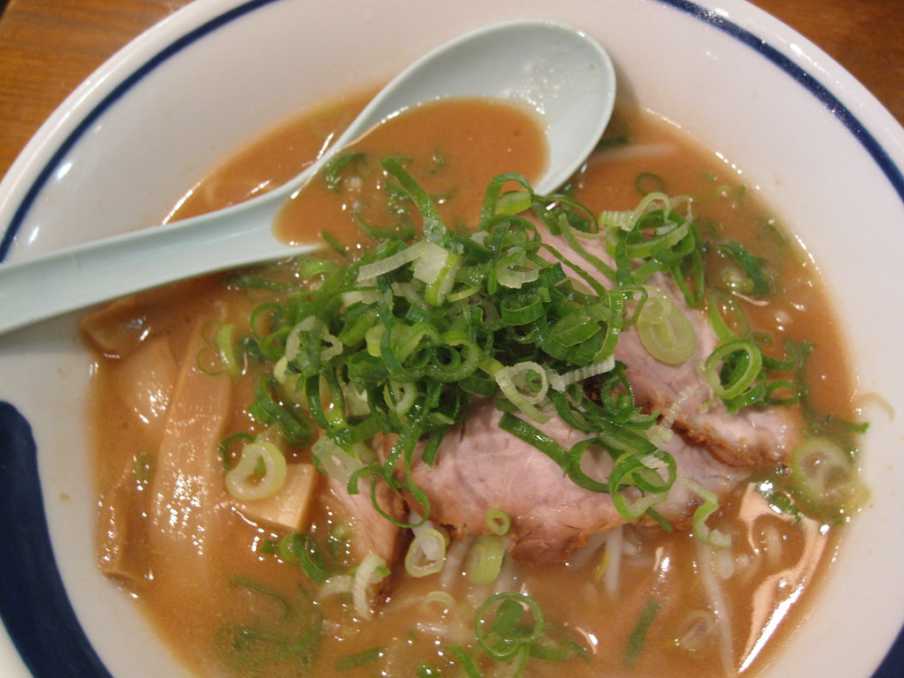

Ramen Kogane
澄んだスープ、
もちもちの麺。
毎朝炊く、やさしいラーメン。
ご挨拶
街のラーメン屋です。
カウンター10席の、小さなラーメン店です。鶏と魚介のスープを、毎朝6時から炊いています。
麺は自家製。スープに合わせて太さを変え、一杯ずつ丁寧に茹でています。ひとりでも、家族でも、気軽にどうぞ。
おすすめ
店の定番

塩ラーメン
澄んだ鶏白湯に、やわらかいチャーシュー。
¥900
味噌ラーメン
コクのあるスープに、たっぷりの野菜。
¥1,000
五目あんかけそば
野菜と海鮮のあんかけ。寒い日に。
¥1,100
GALLERY
店のようす


営業案内
ご来店をお待ちしています
- 昼
- 11:00〜15:00(L.O. 14:40)
- 夜
- 18:00〜21:00(L.O. 20:40)
- 定休日
- 木曜
- 席数
- カウンター10席